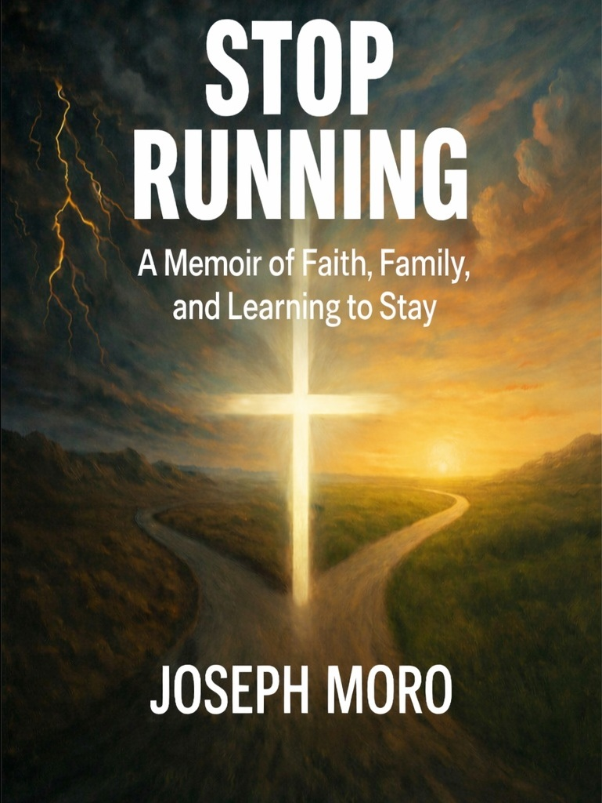
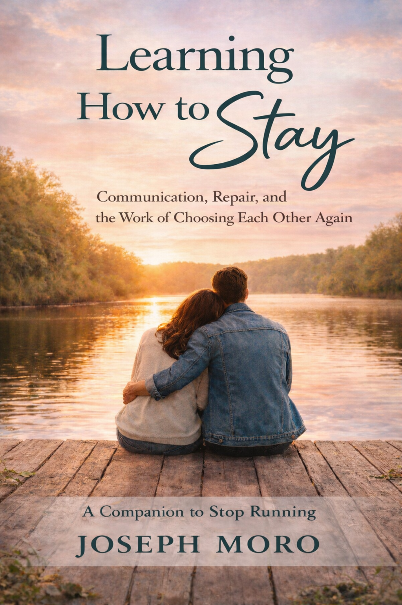

Stop Running
A memoir of faith, family, and learning to stay.
Nonfiction Library
Books about faith, communication, relationships, repair, and choosing to build stronger foundations together.

A memoir of faith, family, and learning to stay.

Communication, repair, and the work of choosing each other again.
A future book about building shared foundations and buying chairs together.